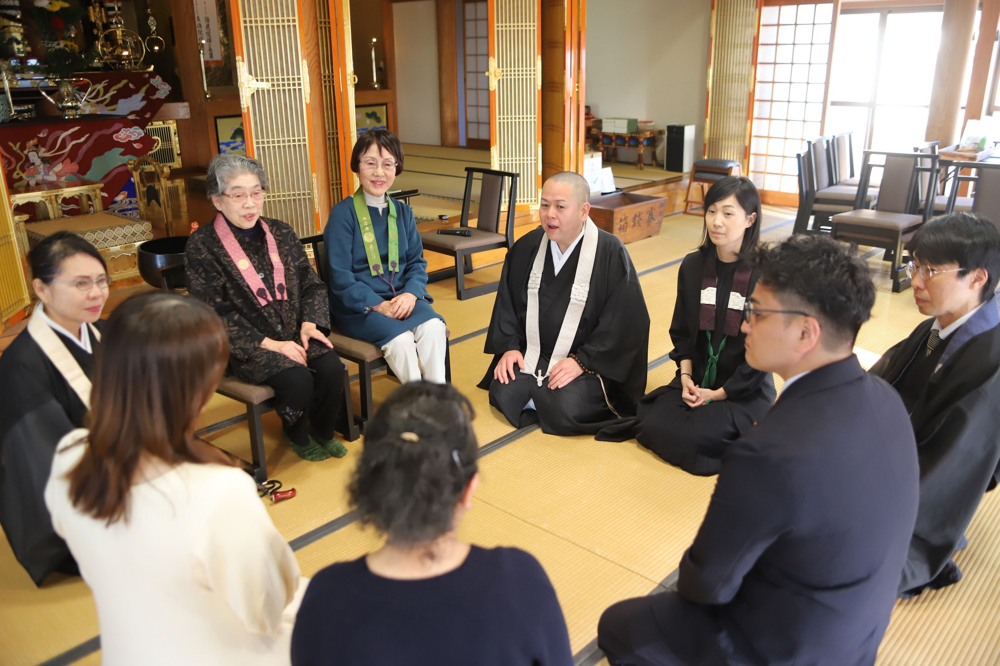

ご不明な点はお気軽にご相談ください

お布施は、「僧侶へ感謝の気持ちを表すために渡す金銭」、「僧侶への労働対価」と捉えていらっしゃる方が少なくないと思いますが、本来お布施は、自身の財や持ち物を他者へ施す行為を指すものであり、みなさまからいただいたお布施は寺院のご本尊にお供えするものでもあります。
本来は「財施・法施・無畏施」という3つの布施行を実践することで、救いに至るための行為、すなわち「与える」ことを意味しています。
私たちは仏の教えを説き、みなさまの苦しみや悲しみに寄り添うことが勤めであり、日々の修行でもあります。同時に、みなさまもお布施を通じて仏の修行を行っているということでもあります。
お一人お一人のお気持ちをいただくことによって、お寺はこの地において長い年月にわたり受け継がれてまいりました。
私たちは日々のお勤め、仏の教えを説く法施、みなさまの不安をとりのぞき心の平穏をお届けする無畏施を通じて、仏道修行を積ませていただいています。
お布施はみなさまのお志です。無理のない範囲でお納めいただければと考えており、金額を明示するものではございません。
「お気持ちと言われてもわからない」という方には、あくまで目安ではございますが、金額感をお伝えしております。
目安については
住職に直接おたずねください。
丁寧にご説明いたします。
お布施は対価ではございません。ご先祖様を供養し、故人様を弔い、今を懸命に生きるみなさまのよりどころとして、末永くあり続けるために。行の一環としてお布施をお考えいただければ幸いです。